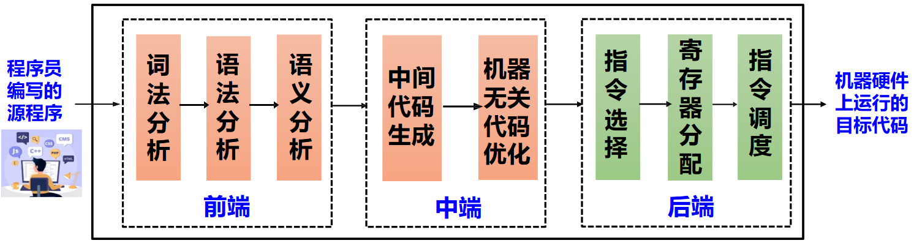
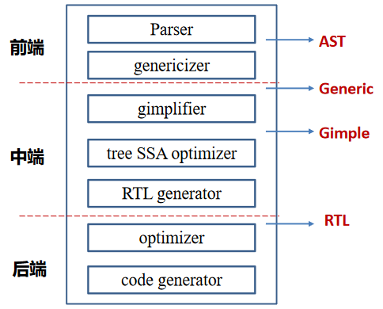
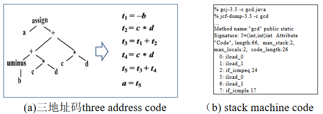
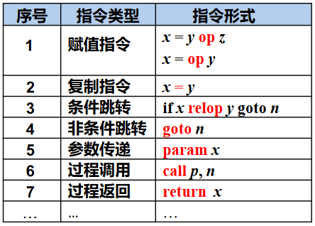
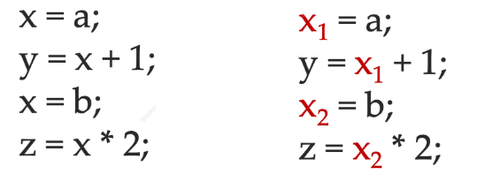

中间代码生成¶
约 3458 个字 32 行代码 预计阅读时间 12 分钟
中间表示概述¶
回顾

- 前端：从源码到IR生成
- 中端：基于IR的分析与变换（可能生成新IR）
- 后端：机器相关优化，从IR 到目标代码
为什么需要中间语言/表示¶
直接翻译成真实的机器代码（如直接通过语义动作生成汇编代码）会有以下问题：
- 阻碍模块化
- 阻碍可移植性
例如 N 种语言翻译成 M 种机器代码，需要 N*M 种翻译器，而中间表示可以将这个问题简化为 N+M 种翻译器

中间表示的定义¶
中间表示（IR）是
- 一种抽象机器语言
- 能够表达目标机器操作
- 无需承诺太多和机器架构有关的细节
设计目标是生成针对不同源语言和不同目标机器的可移植编译器
IR 应该设计简单
- 大块的 AST 转化为 IR
- IR 组合聚集在一起形成“真实”的机器指令
中间表示的分类¶
抽象层次¶
实际编译器可能采用多层 IR 以支持不同层次的分析和变换
划分界限
确切地说，三者之间没有严格的界限，很难严格定义给定 IR 是 HIR，MIR 还是 LIR
因此可以分为：
- 高层中间表示 High-level IR
- 贴近输入语言，方便由前端生成
- 低层中间表示 Low-level IR
- 贴近目标语言，方面目标代码生成
- 中层中间表示 Middle-level IR
GCC 编译器的多层 IR

贴近输入语言的高层 IRs
现代编程语言不断推出高级中间表示
- “高级”类型检查：borrow 检查
- 从高级编程抽象逐步 "lowering"
结构特征¶
- 结构化表示 Structural
- 面向图形（例如：树、DAG ...）
- 大量用于源到源翻译器
- 线性表示 Linear
- 存储布局是线性的
- 混合表示 Hybrid
- 结构化和线性表示的组合
结构化表示的示例
对于 a = (-b + c * d) + c * d
线性表示示例

混合表示示例
例如控制流图（Control-flow Graph）
- 节点内的语句是线性表示
- 节点间构成图形化表示
三地址码¶
三地址码的目标
- 接近大多数目标机器的执行模型 (机器码)
- 支持大多数目标机器提供的数据类型和操作
- 提供有限度的、高于机器码的抽象表达能力，更容易表达出大多数(命令式) 高级语言的特性
三地址码的特征
- 以指令为单位
- 每条指令只有有限数量的操作码
三地址码的一般形式：x = y op z，每个“指令”最多 1 个算符，最多 3 个操作数（三“地址”）
其中“地址”可以具有如下的形式之一：
- 源程序中的名字（name）
- 常量（constant）
- 编译器生成的临时变量（temporary）

就实现上而言，整个三地址指令序列被实现为链表数组，最常见的实现是将三地址代码实现为四元组：一个字段用于操作，另三个字段用于地址，对于那些需要少于三个地址的指令，一个或多个地址字段被赋予 null 或“空”值
其他实现也有三元组、间接三元组
三地址码的示例

静态单赋值¶
静态单赋值（Static Single Assignment, SSA）是一种特殊的三地址代码，其所有变量在代码中只被赋值一次
基本构造思路为
- 为每个变量维护一个计数器
- 从入口开始遍历函数体
- 遇到变量赋值时，为其生成新名字，并替换
- 将新变量名传播到后续相应的使用处，并替换

SSA 的适用范围
通常只针对函数内的变量（即局部变量）计算 SSA，全局变量的 SSA 在实际当中难以计算
使用 SSA 的作用在于：
- 查询 def-use 信息(某些分析的子过程)
- 加速现有算法（基于 SSA 的稀疏分析）
- 有利于严格依赖 SSA 的算法（ssapre, new gvn, ...）
- 可以利用 SSA 的变体(memory SSA, gated SSA ...)
现在已经广泛使用于现代编译器中（如 LLVM）
中间表示树¶
一些现代编译器使用多个 IR，后面阶段的每个 IR 都比前一阶段更接近机器代码；而本教材中 Tiger 编译器只使用一种 IR，即中间表示（IR）树，翻译过程为 AST -> IR Tree -> Assembly Code -> Machine Code
接下来我们将介绍 Tiger 中 IR Tree 的设计和实现
树表示
树表示也用于 GCC 等编译器（称为 RTL）
IR Tree 的示例

BNF 形式的文法描述¶
一种特殊的树型中间语言/中间表示
⟨Exp⟩ ::= "CONST" int
| "NAME" ⟨Label⟩
| "TEMP" ⟨Temp⟩
| "BINOP" ⟨Oper⟩ ⟨Exp⟩ ⟨Exp⟩
| "MEM" ⟨Exp⟩
| "CALL" ⟨Exp⟩ [{⟨Exp⟩}] "call end"
| "ESEQ" ⟨Stm⟩ ⟨Exp⟩
⟨Stm⟩ ::= "MOVE" ⟨Exp⟩ ⟨Exp⟩
| "EXP" ⟨Exp⟩
| "JUMP" ⟨Exp⟩ [{⟨Label⟩}]
| "CJUMP" ⟨Relop⟩ ⟨Exp⟩ ⟨Exp⟩ ⟨Label⟩ ⟨Label⟩
| "SEQ" [{⟨Stm⟩}] "seq end"
| "LABEL" ⟨Label⟩
⟨Oper⟩ ::= "ADD" | "SUB" | "MUL" | "DIV" | "MOD"
⟨Relop⟩ ::= "EQ" | "NE" | "LT" | "GT" | "LE" | "GE"
表达式¶
表达式（Expressions）代表某些值的计算，可能有副作用
关于副作用
副作用意味着更新存储单元或临时寄存器的内容
关于 ESEQ 的理解
ESEQ(s, e) 表示执行语句 s 并在其副作用下计算 e 的结果
- 假设
s是语句a = 5，e是表达式a + 5 - 语句（如
a = 5）不返回值，但是有副作用 ESEQ(a = 5, a + 5)最终的结果是10
语句¶
语句（Statements）执行副作用并控制流程，无返回值

注意 Label 和 Expression 中的 Name 的区别
Name是使用这个 symbol，比如 goto .L，而 Label 是定义这个 symbol，即 .L:
中间表示树的生成¶
表达式的翻译¶
总览¶
Tiger 编译器不区分 expressions 和 statements，因此可以将 AST 中的 expressions 分为三类：
- 有返回值的表达式
- 无返回值的表达式（例如
while） - 具有布尔值的表达式，例如
a > b- 条件跳转等
为了表示这三类表达式，我们使用 Ex、Nx 和 Cx 三种类型：
- Ex：计算值的表达式（Tree expression）
- Nx：不计算值的表达式（Tree statement）
- Cx：条件跳转，是一条可以跳转到真标签或假标签的 Tree statement（也可以看作具有布尔值的表达式）
此外，考虑 flag := (a>b | c<d)，可见为了给 flag 赋值，我们需要将 Cx 转换为 Ex（因为只有 Ex 才有返回值），所以需要在 Ex、Nx 和 Cx 表达式之间进行转换
为此，可以创建 unEx、unNx、unCx 这些在 Ex、Nx 和 Cx 之间转换的实用函数，从而对于不同类型的输出表达式，可以使用不同的转换函数
为什么需要unEx, unNx, unCx这几个辅助函数？
- 需要考虑到
a>b被使用的“上下文” - IR翻译是 context-dependent 问题，难以用 CFG 刻画，但是可以用属性文法、semantic actions 等方式
Simple Variables¶
变量的大小
对于 Tiger，所有变量的大小相同，都是字大小
对于在当前过程的栈帧中声明的简单变量 v，假设帧指针为 fp，局部变量 v 的偏移量为 k，可以翻译为
MEM(BINOP(PLUS, TEMP fp, CONST k))
或简写为
MEM(+(TEMP fp,CONST k))
另外，如果变量在寄存器 t 中，只需要返回
TEMP t
即可
Array Variables¶
不同的编程语言对数组的处理方式不同
- 在 Pascal 中，数组变量代表数组的内容，可以直接使用
a := b进行赋值 - 在 C 中，数组变量代表数组的地址，上述赋值是不合法的
- 在 Tiger 和 ML 中，数组变量的行为类似于指针
- 没有像 C 中那样的命名的数组常量
- 新的数组由
ta[n] of i创建（并初始化）ta是数组类型的名称n是数组大小i是数组元素的初始值
Tiger 中数组的初始化
例如
最终 a 指向和数组 b 一样的 12 个 7，而原始的 12 个 0 会被丢弃
此外，Tiger 中的记录（Record，可以看作结构体）本质上也是指针，赋值与数组赋值一样，是指针赋值，不会复制所有字段
数组访问
在上述内容，我们只介绍了数组的结构，如何转换数组访问，例如 arr[2]、arr[x]？详见 Subscripting and Field Selection
Structured L-values¶
先了解一下左值（L-value）和右值（R-value）的概念：
- 右值（R-value）是出现在等式右边的值
- 如
a + 3和f(x) - 右值并不表示可赋值的位置
- 如
- 左值（L-value）是可以出现在赋值语句左侧的表达式的结果
- 如
x和a[i+2] - 表示可以赋值到的位置
- 可以出现在赋值语句的右侧（在这种情况下，它意味着该位置的内容）
- 如
在 Tiger 中，整数或指针值是“标量”（它只有一个组成部分）
- 所有变量和左值都是标量
- 数组或记录变量实际上是一个指针
但是在 C 或 Pascal 中，有结构化的左值（Structured L-values）
- C 中的 struct
- Pascal 中的 array 和 record
这些并不是标量，而是结构化的，地址计算方式应为
Mem(+(TEMP fp,CONST kn), S)
其中 kn 是结构中该变量的偏移量，S 是结构中该变量的大小
此外，Tiger 中左值应表示为地址（没有顶部 MEM 节点），因此需要根据实际情况进行选择：
- 将左值转换为右值：从该地址获取值
- 向左值赋值：存储到该地址
Subscripting and Field Selection¶
计算 a[i] 的地址，为 (i − l) × s + a，其中：
l：索引范围的下限s：每个数组元素的大小（以字节为单位）a：数组元素的基地址
如果
a是全局的，具有编译时常量地址，则减法a – s ⨉ l可以在编译时完成类似的，计算记录
a的字段f的地址offset(f) + a
正如上文所述，在 Tiger 语言中，所有记录和数组值实际上都是指向记录和数组结构的指针，不存在结构左值。因此，数组的“基地址”实际上是指针变量，因此需要 MEM 操作符。因此 a[i] 的 IR 表示为
MEM(+(MEM(e),BINOP(MUL, i, CONST W)))
其中 MEM(a) 代表 a 的地址，W 代表数组元素的大小（字节，word size）

Record Access
对于如下的记录访问

假定 e 是表示 a 地址的 IR 树，若要访问 a.f3，则可以使用
MEM(BINOP(PLUS, e, BINOP(MUL, CONST(3), CONST(w))))
A Sermon of (Memory) Safety
内存错误非常常见，因此可以插入一些额外的指令进行动态检查，如
- Array bound check
- Null check
相关的工具如 AddressSanitizer (ASAN)
Arithmetic¶
对于算术表达式，因为 Tiger 中没有浮点数，只需要考虑两种：
- 二元运算（Binaries）
- 每个算术运算符对应一个树运算符（例如，
BINOP(op, e1, e2)）
- 每个算术运算符对应一个树运算符（例如，
- 一元运算（Unaries）
- 取负数可以实现为与 0 做减法
- 逻辑非可以实现为与 1 做异或/与 0 做相等比较
- 取补码可以实现为与所有 1 做异或
Conditionals¶
比较运算符的结果是一个 Cx 表达式，将根据结果跳转到 true 目标和 false 目标
条件表达式可以轻松地与 Tiger 运算符 & 和 | 组合，例如 a > b | c < d
那么如何处理 if 语句？以 if e1 then e2 else e3 为例，最直接的做法是：
e1：Cx 表达式e2和e3：Ex 表达式- 将
unCx应用于e1 - 将
unEx应用于e2和e3 - 为条件创建两个标签
t和f - 分配临时
r - 在标签
t之后，将e2移动到r - 在标签
f之后，移动e3到r - 两个分支都通过跳转到新创建的
join标签来结束
此外，如果 e2 和 e3 都是 statements，unEx 是可以的，但最好专门识别这种情况；而如果 e2 或 e3 是 Cx 表达式，unEx 将产生可怕的跳转和标签混乱。因此最好特别处理这种情况：
case Tr_cx: {
Temp_temp r = Temp_newtemp( );
Temp_label t = Temp_newlabel( ), f= Temp_newlabel( );
doPatch(e->u.cx.trues, t);
doPatch(e->u.cx.falses, f);
return T_Eseq(T_move(T_Temp(r),T_Const(1)),
T_Eseq(e->u.cx.stm,
T_Eseq(T_Label(f),
T_Eseq(T_Move(T_Temp(r), T_Const(0)),
T_Eseq(T_Label(t), T_Temp(r))))));
}
if x < 5 then a > b else 0 的翻译
x < 5 被翻译为 Cx(s1)，a > b 被翻译为 Cx(s2)，则整体可以表示为
SEQ(S1(z,f), SEQ(LABEL Z, s2(t,f)))
类似于 if x < 5 & a > b then 1 else 0

if (b==0) a = b 的翻译

if (E) S 的翻译

While Loops¶
While 循环的一般布局是
如果 break 语句出现在主体中（并且没有嵌套在任何内部 while 语句中），则转换只需要一个 JUMP 即可完成。其中翻译 break 语句（transExp 函数）需要有一个新的形式参数 break，其值为最近的封闭循环的 done 标签
For Loops¶
翻译 for 语句（lo to hi 看作 [lo, hi]）的一种简单方法是将抽象语法重写为所示的 let/while 表达式的抽象语法，即从
改为
但是当 limit = maxint 时，i + 1 会因为溢出而导致循环不可停，因此可以优化为：
if lo > hi goto done
i := lo
limit := hi
test:
body
if i >= limit goto done
i := i+1
goto test
done:
Function Call¶
转换函数调用 f (a1, ..., an) 很简单，只是必须将 static link 添加为隐式额外参数
CALL(NAME l_f, [sl, e1, e2, ..., en ])
其中
l_f是f的标签sl是 static link，是指向f父级的指针（a pointer tof’s parent level）
还不清楚的点
Both the level of f and the level of the function calling f are required to calculate sl
声明的翻译¶
- 变量声明
- 需要计算出帧（frame）中的偏移量（offset），然后将右侧表达式的值移动（move）到帧（frame）中的正确位置（slot）
- 类型声明
- 无需生成任何 IR 树代码
- 函数声明
Variable Definition¶
在语义分析中，transDec 函数更新值 t 和 let 表达式主体的类型环境。而对于 IR 转换，transDec 应该返回一个额外的结果作为变量的初始化
- 将初始化转换为赋值表达式
- 必须将其放在
let主体之前
如果 transDec 应用于函数和类型声明，则结果将是“无操作”表达式，例如 Ex(CONST(0))
Function Definition¶
函数被翻译成由三个组件组成的“汇编语言段”：
- Prologue
- 1 标记函数开始的伪指令（特定汇编语言中需要）
- 2 函数名称的标签定义
- 3 调整栈指针的指令（分配新帧）
- 4 将逃逸（escaping）参数（包括静态链接）保存到帧中以及将非逃逸参数移动到新的临时寄存器中的指令
- 5 存储指令以保存函数内使用的任何被调用者保存寄存器（包括返回地址寄存器）
- Body
- 6 主体代码翻译后的表达
- Epilogue
- 7 将返回值（函数的结果）移至寄存器的指令
- 8 加载指令以恢复被调用者保存寄存器
- 9 重置栈指针（释放帧）的指令
- 10 返回指令（JUMP到返回地址）
- 11 根据需要使用伪指令来宣布函数结束
其中步骤 1、3、9、11 取决于堆栈帧的确切大小，且这些是较晚生成的（在寄存器分配之后）
创建日期: 2024年6月21日 21:18:16